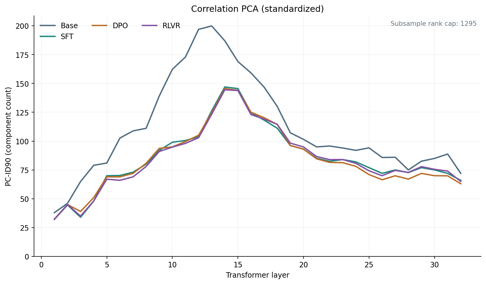
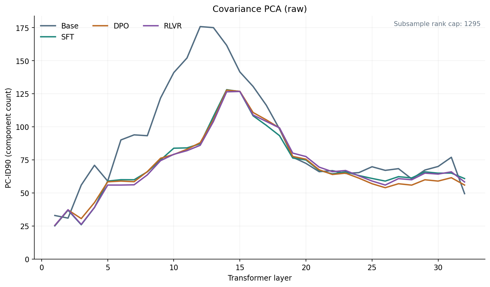
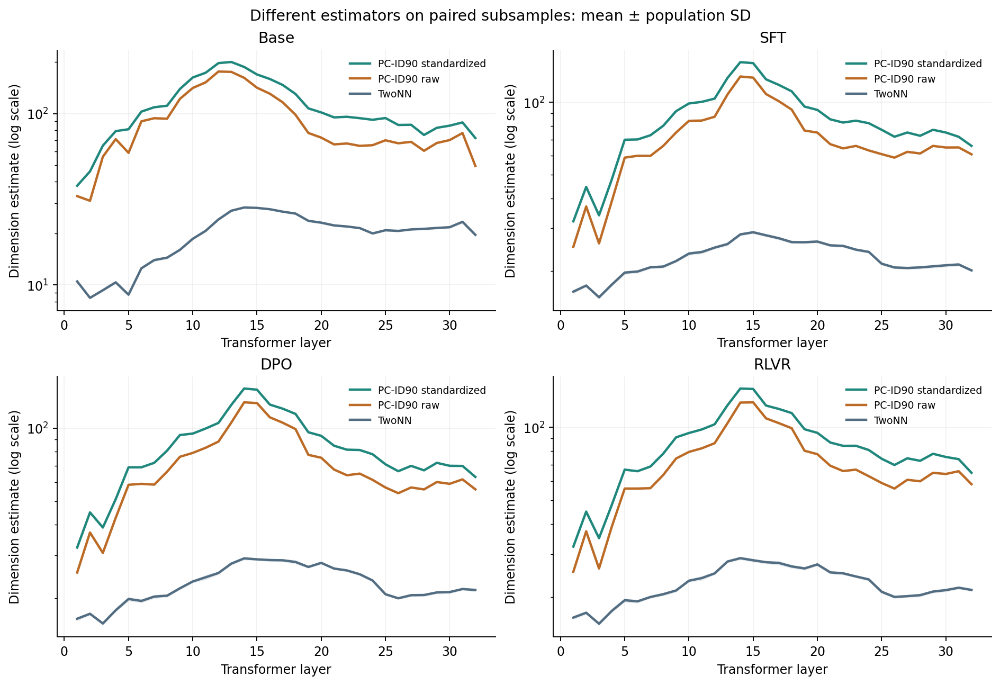
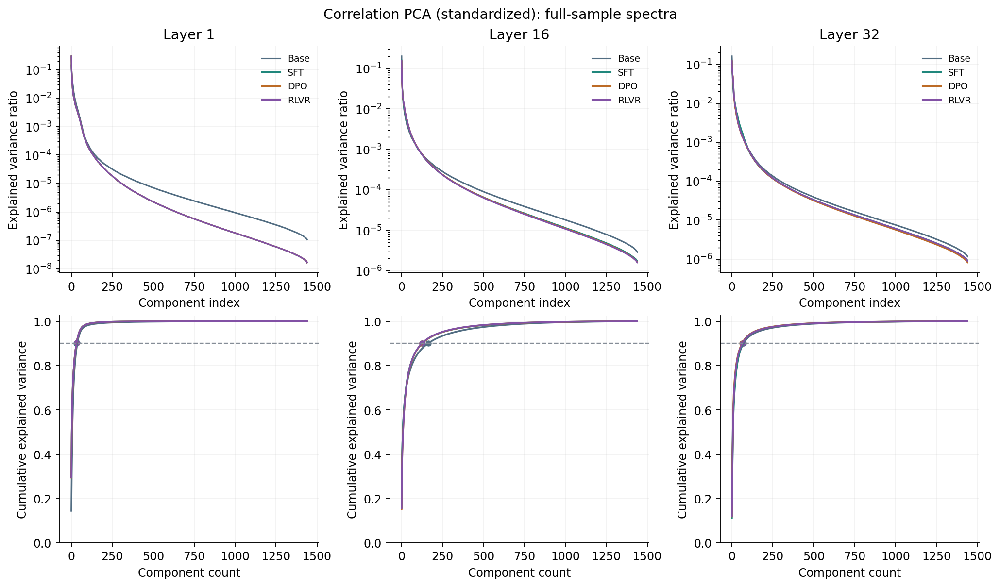
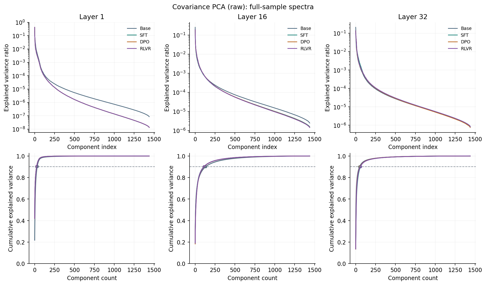
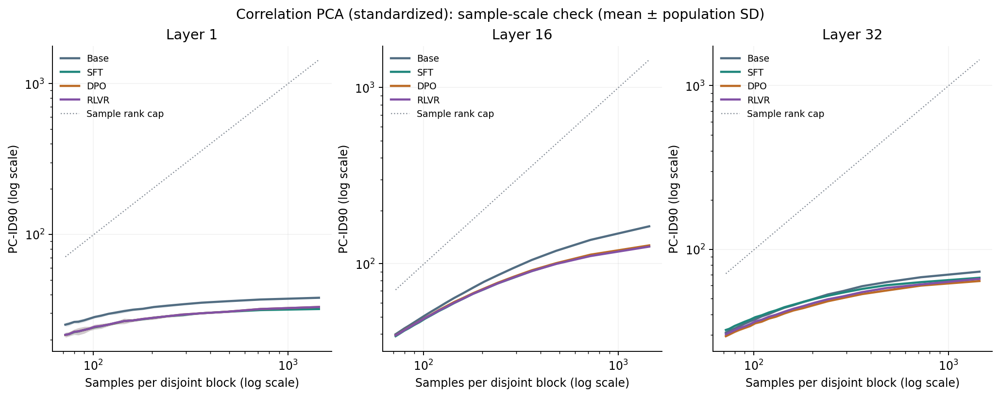
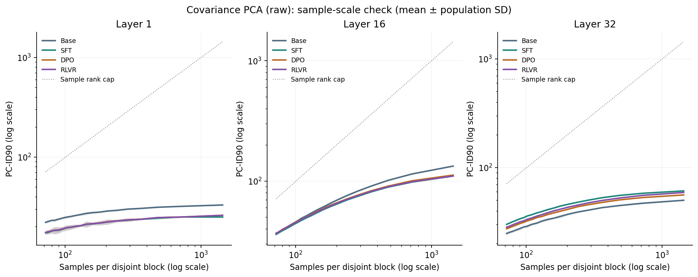

Analysis identity: 53cbc49b7d8c1d97c2d5c81a5e8b411403d046741037ba4ae5d2d0341593f8a9. Activation protocol: aa159de1b8f08632c80a91d46bc33d68ab582c53f926bd36e487324ee8081ddb.
This page describes the historical result tables preserved in the publication. Current-code validation is recorded separately in publication validation.
1440 shared questions; 4096 coordinates; four stages and 32 raw decoder blocks. Each layer uses the same 20 saved subsets of 1296 items. PC-ID90 is the 1-based count required to reach or exceed 90% cumulative explained variance. Correlation PCA centers and standardizes each coordinate within the current sample set using population SD (ddof=0), then computes covariance with denominator n−1. Its nonconstant diagonal is n/(n−1); this common scale factor does not affect variance ratios or counts. Covariance PCA only centers and preserves coordinate scales. Constant coordinates contribute zero variance.
The exact sample Gram matrix is diagonalized in float64, and every saved spectrum contains all 4096 feature-space eigenvalues, including zero padding. Negative eigenvalues within the documented numerical tolerance are clipped; trace agreement and centered-rank bounds are independently checked. The additional legacy_index_gt90 is the zero-based index at strictly greater than 90%, which need not equal pc_id90−1 at an exact threshold hit.
Means and population SD describe the saved overlapping subsamples, not independent experiments or confidence intervals. Peaks use unsmoothed means and earliest ties; paired peak-minus-endpoint differences use the chosen common layer. This data-driven selection is descriptive. Differences and ratios against TwoNN are calculated within each matched stage, layer and replicate before aggregation. Mean ratios are not ratios of means. PCA measures global linear variance concentration while TwoNN estimates local neighbor-ratio dimension; their difference is not an estimator error.
| stage | preprocessing | first_layer | peak_layer | last_layer | first_mean | first_sd | peak_mean | peak_sd | last_mean | last_sd | peak_minus_first_mean | peak_minus_first_sd | peak_minus_last_mean | peak_minus_last_sd | shape |
|---|---|---|---|---|---|---|---|---|---|---|---|---|---|---|---|
| base | correlation | 1 | 13 | 32 | 37.95 | 0.21794494717703367 | 199.9 | 0.30000000000000004 | 72.0 | 0.0 | 161.95 | 0.3840572873934304 | 127.9 | 0.30000000000000004 | interior_peak |
| base | covariance | 1 | 12 | 32 | 33.0 | 0.0 | 175.8 | 0.4000000000000001 | 49.5 | 0.5 | 142.8 | 0.4000000000000001 | 126.3 | 0.6403124237432849 | interior_peak |
| sft | correlation | 1 | 14 | 32 | 32.1 | 0.3 | 146.95 | 0.3840572873934304 | 66.0 | 0.0 | 114.85 | 0.4769696007084729 | 80.95 | 0.38405728739343037 | interior_peak |
| sft | covariance | 1 | 14 | 32 | 25.15 | 0.3570714214271425 | 128.1 | 0.30000000000000004 | 60.9 | 0.3 | 102.95 | 0.21794494717703367 | 67.2 | 0.39999999999999997 | interior_peak |
| dpo | correlation | 1 | 14 | 32 | 32.25 | 0.4330127018922193 | 145.6 | 0.4898979485566356 | 63.0 | 0.0 | 113.35 | 0.6538348415311009 | 82.6 | 0.4898979485566356 | interior_peak |
| dpo | covariance | 1 | 14 | 32 | 25.45 | 0.49749371855331004 | 127.75 | 0.4330127018922193 | 56.0 | 0.0 | 102.3 | 0.5567764362830021 | 71.75 | 0.4330127018922193 | interior_peak |
| rlvr | correlation | 1 | 14 | 32 | 32.3 | 0.45825756949558394 | 144.5 | 0.5 | 65.0 | 0.0 | 112.2 | 0.6 | 79.5 | 0.5 | interior_peak |
| rlvr | covariance | 1 | 15 | 32 | 25.45 | 0.49749371855331004 | 126.75 | 0.4330127018922193 | 58.35 | 0.47696960070847294 | 101.3 | 0.5567764362830021 | 68.4 | 0.4898979485566356 | interior_peak |







Only prespecified layers [1, 16, 32] use k=1…20 disjoint equal blocks from the saved permutations. Each block fits its own moments. Remainders are recorded, and k=1 has SD=0. The centered rank is bounded by min(n−1,d), with constants reducing d; full-sample cap 1439, main-subset cap 1295, minimum-block cap 71. Sample-size sensitivity and these limits prevent direct extrapolation to a population dimension.
Interior peaks do not imply strictly monotonic sides. Neither curve shape, stage ordering nor PCA–TwoNN separation proves curvature, compression mechanisms or causal training effects. Native input formatting and final-token readout differ by stage. No generation accuracy or performance is measured.
Paper v2 · Pinned author implementation. Shared PCA subsets and blockwise PCA scale checks are explicit extensions.